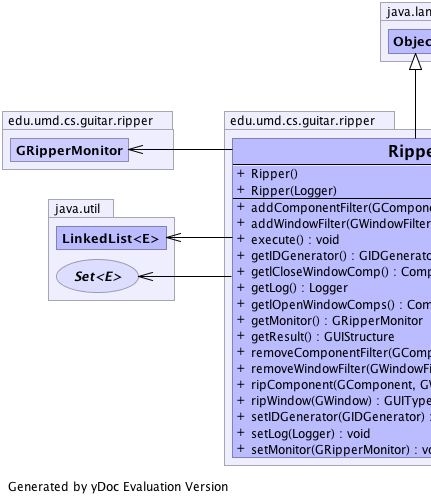
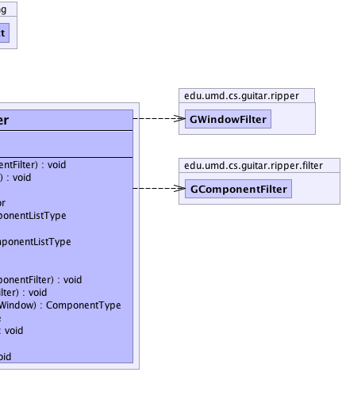

edu.umd.cs.guitar.ripper.Ripper
edu.umd.cs.guitar.ripper.Ripper
|
|||||||||
| PREV CLASS NEXT CLASS | FRAMES NO FRAMES | ||||||||
| SUMMARY: NESTED | FIELD | CONSTR | METHOD | DETAIL: FIELD | CONSTR | METHOD | ||||||||
java.lang.Object
public class Ripper
The core ripping algorithm class.
|  |  |
| Constructor Summary | |
|---|---|
Ripper()
Constructor without logger |
|
Ripper(org.apache.log4j.Logger logger)
Constructor with logger |
|
| Method Summary | |
|---|---|
void |
addComponentFilter(GComponentFilter filter)
Add a component filter |
void |
addWindowFilter(GWindowFilter filter)
Add a window filter |
void |
execute()
Start ripping |
edu.umd.cs.guitar.model.GIDGenerator |
getIDGenerator()
|
edu.umd.cs.guitar.model.data.ComponentListType |
getlCloseWindowComp()
|
org.apache.log4j.Logger |
getLog()
|
edu.umd.cs.guitar.model.data.ComponentListType |
getlOpenWindowComps()
|
GRipperMonitor |
getMonitor()
|
edu.umd.cs.guitar.model.data.GUIStructure |
getResult()
|
void |
removeComponentFilter(GComponentFilter filter)
Remove a component filter |
void |
removeWindowFilter(GWindowFilter filter)
Remove a window filter |
edu.umd.cs.guitar.model.data.ComponentType |
ripComponent(edu.umd.cs.guitar.model.GComponent component,
edu.umd.cs.guitar.model.GWindow window)
Rip a component |
edu.umd.cs.guitar.model.data.GUIType |
ripWindow(edu.umd.cs.guitar.model.GWindow gWindow)
Rip a window |
void |
setIDGenerator(edu.umd.cs.guitar.model.GIDGenerator iDGenerator)
|
void |
setLog(org.apache.log4j.Logger log)
|
void |
setMonitor(GRipperMonitor monitor)
|
| Methods inherited from class java.lang.Object |
|---|
clone, equals, finalize, getClass, hashCode, notify, notifyAll, toString, wait, wait, wait |
| Constructor Detail |
|---|
public Ripper(org.apache.log4j.Logger logger)
logger - External loggerpublic Ripper()
| Method Detail |
|---|
public GRipperMonitor getMonitor()
public edu.umd.cs.guitar.model.GIDGenerator getIDGenerator()
public void setIDGenerator(edu.umd.cs.guitar.model.GIDGenerator iDGenerator)
iDGenerator - the iDGenerator to setpublic org.apache.log4j.Logger getLog()
public edu.umd.cs.guitar.model.data.ComponentListType getlOpenWindowComps()
public void setLog(org.apache.log4j.Logger log)
log - the log to setpublic void execute()
public edu.umd.cs.guitar.model.data.GUIType ripWindow(edu.umd.cs.guitar.model.GWindow gWindow)
gWindow -
public edu.umd.cs.guitar.model.data.ComponentType ripComponent(edu.umd.cs.guitar.model.GComponent component,
edu.umd.cs.guitar.model.GWindow window)
component -
public edu.umd.cs.guitar.model.data.ComponentListType getlCloseWindowComp()
public void setMonitor(GRipperMonitor monitor)
monitor - the monitor to setpublic void addWindowFilter(GWindowFilter filter)
filter - public void removeWindowFilter(GWindowFilter filter)
filter - public void addComponentFilter(GComponentFilter filter)
filter - public void removeComponentFilter(GComponentFilter filter)
filter - public edu.umd.cs.guitar.model.data.GUIStructure getResult()
|
|||||||||
| PREV CLASS NEXT CLASS | FRAMES NO FRAMES | ||||||||
| SUMMARY: NESTED | FIELD | CONSTR | METHOD | DETAIL: FIELD | CONSTR | METHOD | ||||||||